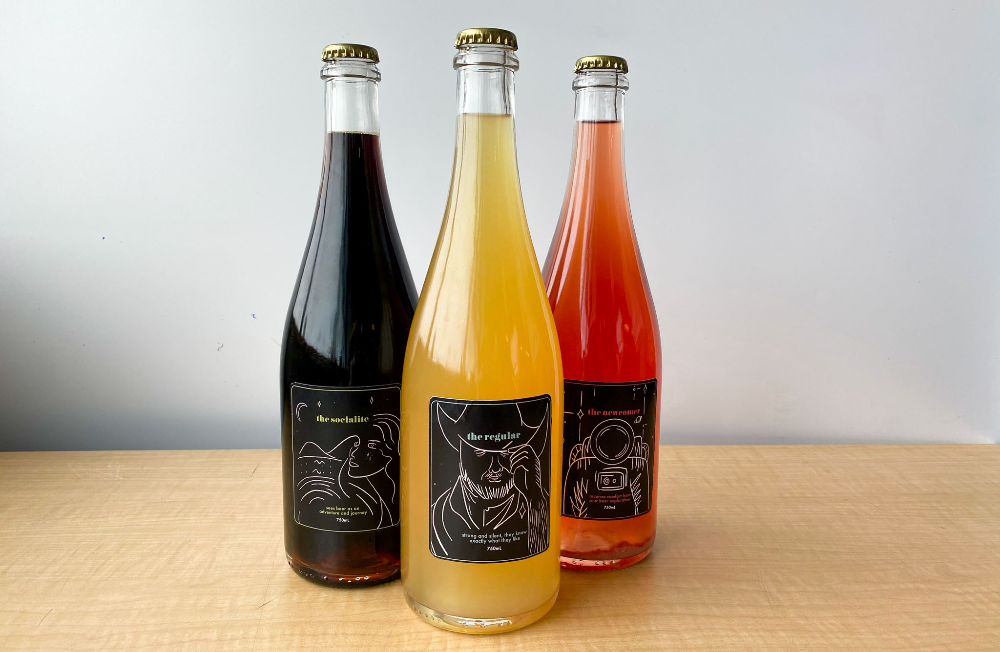
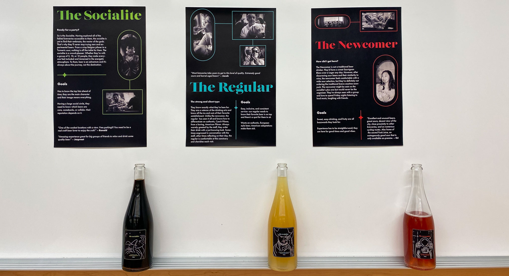
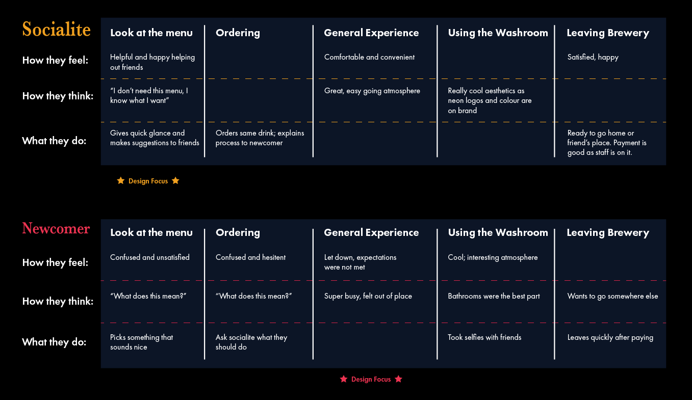
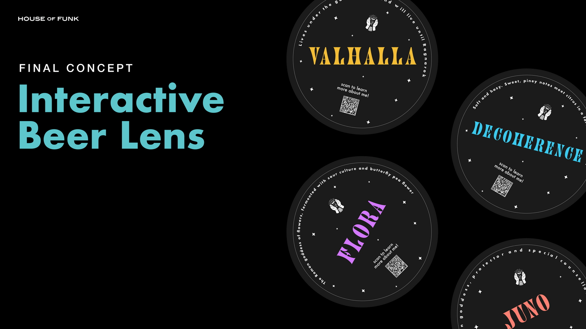
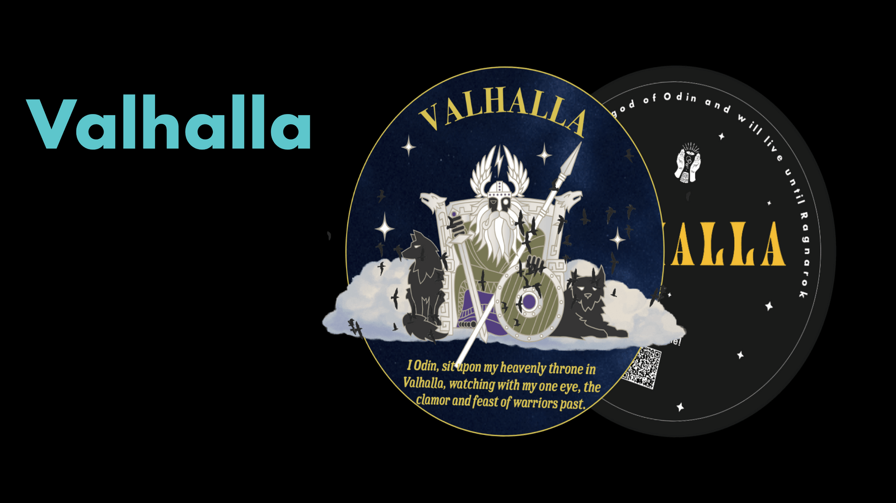

In this project, my team and I worked with local brewery, House of Funk, to create the "Interactive Beer Lens". The goal of this project was to create an experience for customers that goes beyond the beer and allow customers to form a deeper connection with the brand.
In this project, my contributions consisted of business and product research, copywriting, photography/photo retouching, and graphic design (creating illustrations in mockups, poster design).
1 semester (4 months)
Through interviews with House of Funk's founder and four consumers, we gathered insights on consumer demographics, workplace culture, business frustrations, and opportunities for growth. From there, we identified three core personas that attend the brewery: the newcomer, the socialite, and the regular. Using product research, we coincided these identities with the core beers at House of Funk.
 Once we had an understanding of who our consumers were, we mapped both the socialite's and newcomer's journey. In the socialite's journey, we identified that their experience is repetitive and consistent. In the newcomer's journey, we identified that although they liked the atmosphere, they felt disconnected from the brewery which prohibited them from forming a meaningful connection with the brand.
Here, we understood that for socialite's, their experience was consistent, which prevents them from exploring the other offerings of the brewery. Likewise, for newcomer's there was a disconnect between the pre-visit and in-house experience, which made it difficult for these customers to form a deep connection to House of Funk.
Based on our reflection, past research, and initial concept mockups, we designed a workshop to better understand our participant group. This workshop had four participants: the brewery owner, the brand manager, a "socialite" consumer, and a "newcomer" consumer. The workshop was executed in two sessions to separate consumers and stakeholders and consisted of four activities: a photo collage, a mindmap, mash-up questions, and solution ideation.
From the stakeholders, we observed their sense of love for the process of brewing and the aspect of sharing this love with the people who visit. From our consumers, we observed that they focused on the unique experience and environment that House of Funk provided. Both users and stakeholders were aligned in feeling that the best way to build a deeper connection between HOF and its users was through:
From the class feedback on our research and initial concepts, we created the "Interactive Beer Lens". Using augmented reality, we created a rich, in-house experience in the brewery using QR codes.
 This project was paticularly interesting due to our direct involvement with the brewery. Our solution was rooted in process, adapting with interviews and workshops. If I had more time with this project, I would love to test our solution in the brewery, and see how customers perceive our intervetion. Otherwise, I think we did come up with a thoughtful solution built on process.